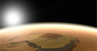
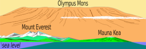

Olympus Mons is the largest volcano on Mars, standing at over 33,476 feet. The summit alone is 53 miles wide and its surrounding edges reach as high as six miles. The volcano is located in Mars' western hemipshere at the edge of the Tharsis bulge and is the tallest known planetary mountain in the Solar System.
Just to put into perspective how massive Olympus Mons is - think of this behemoth as being  roughly the size of Arizona - but three times bigger than Earth's largest mountain Mt. Everest. The cliff alone has been reported to be as tall as Mauna Kea.